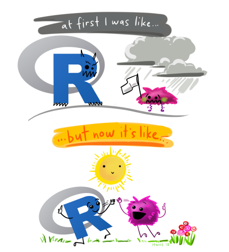
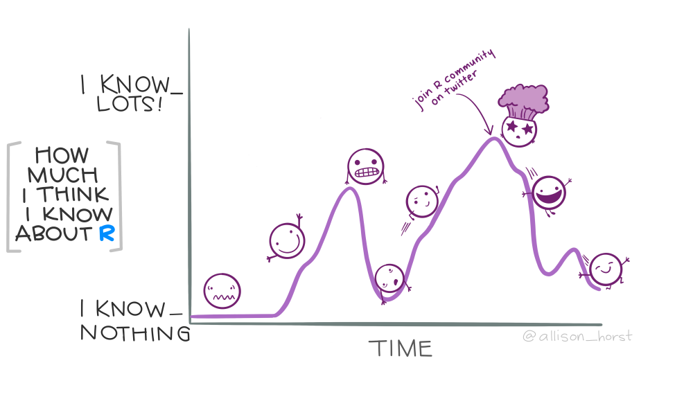
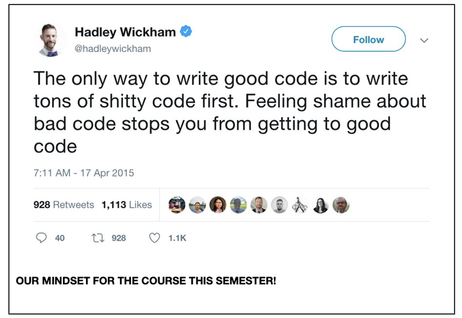
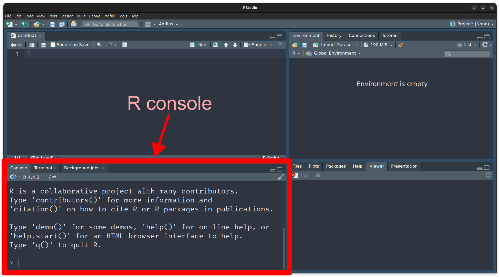
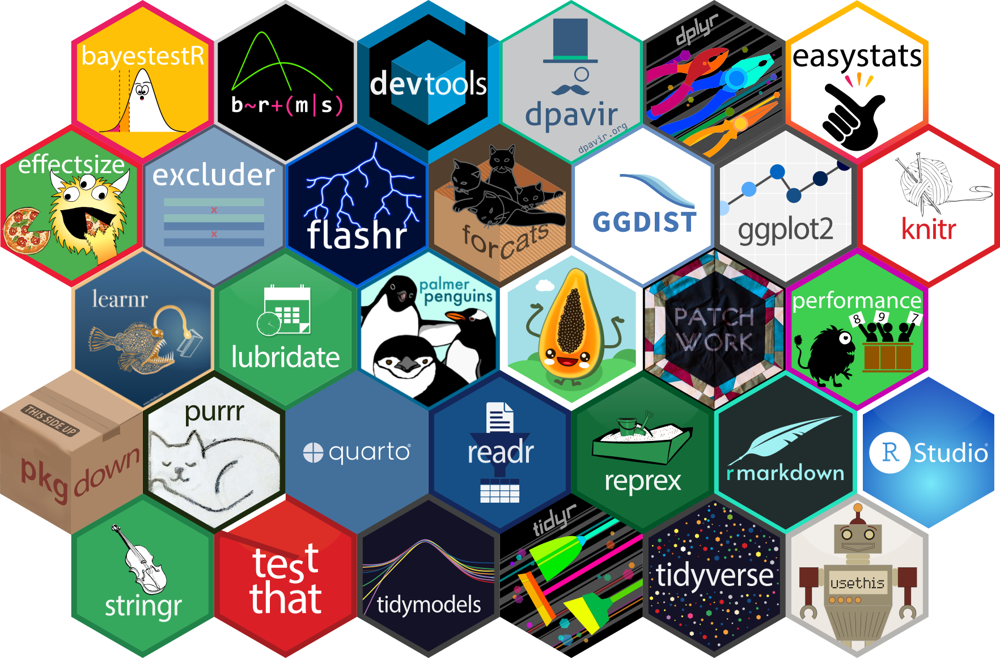
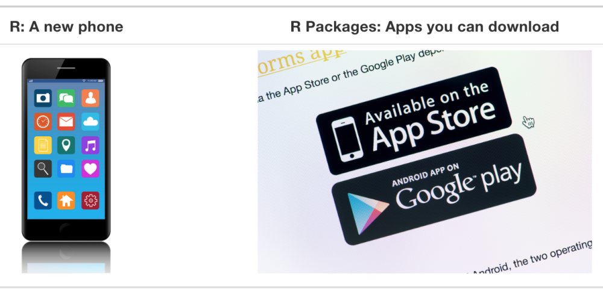

install.packages("palmerpenguins")Getting started with R
Data Processing and Visualization in R
Jeff Stevens (he/him)
2025-01-07
What is R?
R is a statistical programming language.

What is R?
R is a statistical programming language.
Source: Allison Horst
What is R?
R is a statistical programming language.
Source: Allison Horst
What is R?
R is a statistical programming language.
Source: Twitter
What is R?
R is a statistical programming language.
It allows you to flexibly
wrangle data
visualize data
analyze data
create reproducible documents
Conventions
All
codeis in monospace font purple textR functions end with parentheses:
function()Directory names end with slash:
home/Package names are surrounded by curly braces:
{tidyverse}Keyboard buttons separate keys with a plus: Ctrl+S
These are parentheses
(), brackets[], and braces{}Links are in light blue text
Getting started
Installing R
Download at https://r-project.org.
For Windows, also install Rtools
Getting started
Installing RStudio
RStudio is an Integrated Development Environment (IDE). Download from Posit
Getting started
Interacting with R
Using the R console
Packages
Packages are collections of function and data sets
Packages
Base R is a core set of packages for all R installations.
Source: A ModernDive into R and the Tidyverse
Note
User-contributed packages can be found on the Comprehensive R Archive Network or CRAN.
Packages
Installing
In the console type
install.packages("<package_name>") where <package_name> is the name of the package.
Packages
Installing
Try installing the {palmerpenguins} package.
You can install multiple packages simultaneously by wrapping them with c(). For example,
install.packages(c("remotes", "here"))Packages
Loading packages

{kind=link}
Packages
Loading packages
Load the {here} package:
Note
Every time you close your R session, you’ll have to reload the packages you were using.
Packages
Using
Let’s view the penguins data set from the {palmerpenguins} package.
Try this:
penguinsYou should receive Error: object 'penguins' not found. Why did you receive this error?
Packages
But you can either load the {palmerpenguins} package, or use this trick to call a specific function from a specific package.
palmerpenguins::penguins# A tibble: 344 × 8
species island bill_length_mm bill_depth_mm flipper_length_mm body_mass_g
<fct> <fct> <dbl> <dbl> <int> <int>
1 Adelie Torgersen 39.1 18.7 181 3750
2 Adelie Torgersen 39.5 17.4 186 3800
3 Adelie Torgersen 40.3 18 195 3250
4 Adelie Torgersen NA NA NA NA
5 Adelie Torgersen 36.7 19.3 193 3450
6 Adelie Torgersen 39.3 20.6 190 3650
7 Adelie Torgersen 38.9 17.8 181 3625
8 Adelie Torgersen 39.2 19.6 195 4675
9 Adelie Torgersen 34.1 18.1 193 3475
10 Adelie Torgersen 42 20.2 190 4250
# ℹ 334 more rows
# ℹ 2 more variables: sex <fct>, year <int>tidyverse

Core tidyverse packages
Homework
Before the first class period
Install R from https://r-project.org
Install RStudio from https://posit.co
Install
{tidyverse}packageComplete course introduction form
Read the syllabus
Read readings in syllabus schedule